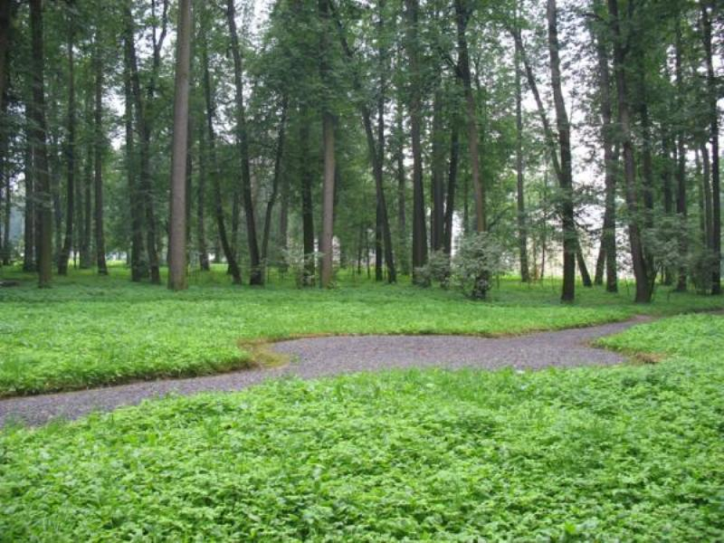

|  | Министерство культуры Российской Федерации Портал Культура.рф Проект «Образы России» |
Le musée-réserve naturel de Pouchkine (Vyazemy)
Le cadran solaire

Le cadran solaire dans le parc régulier du domaine Viazema
L’entreprise du XVIIIe siècle «Le cadran solaire» se trouve dans le parc régulier de tilleuls et représente actuellement les tilleuls plantés sur le périmètre du terrain rond libéré des arbres au centre du parc (24 arbres), âgés de 110-120 à 175-180 ans.
Le parc régulier qui a été conservé jusqu’aux nos jours se trouvant du côté est de la maison principale du domaine est une partie du jardin régulier des tilleuls qui a été planté, selon l’âge des arbres conservés, environ du milieu au début du XIXe siècle. Cette partie du parc avec la maison principale du domaine, ses pavillons et le parterre de fleurs se trouvant entre eux forme l’ensemble du palais et du parc.
Au débur le parc avait l’aménagement radial: du petit terrain rond se trouvant sur l’allée principale divergeaient des rayons des allées radiales qui formaient avec des allées axiales passant des pavillons le système assez épais des chemins. Le long de ces chemins ont été planté des rangs des arbres. Actuellement l’aménagement initial du parc est presque perdu, malgré qu’on peut le lire dans certaines parties sur les rangs conservés des tilleuls.
L’espèce prédominante du bois du parc régulier est tilleul. La majorité forment les arbres du groupe de l’âge de 120 à 180 ans pourtant l’âge de certains les plus vieux arbres qui représentent dans différentes parties du parc, le long de l’allée principale et radiale plus de 20 de 200 à 240 ans.